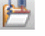
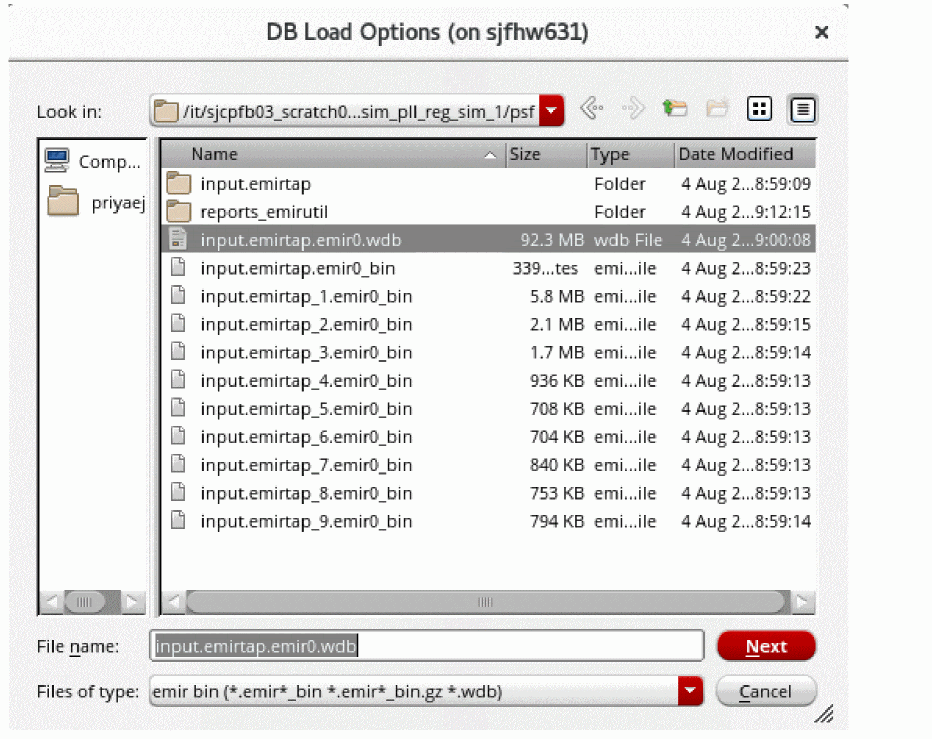
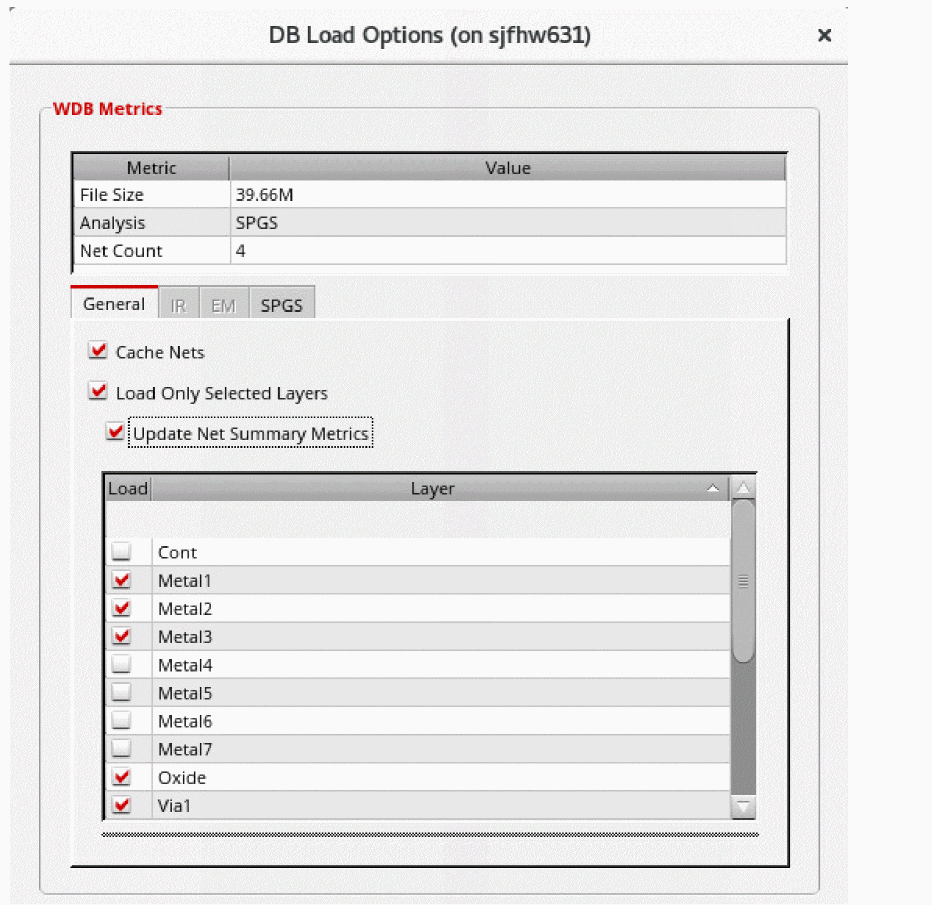
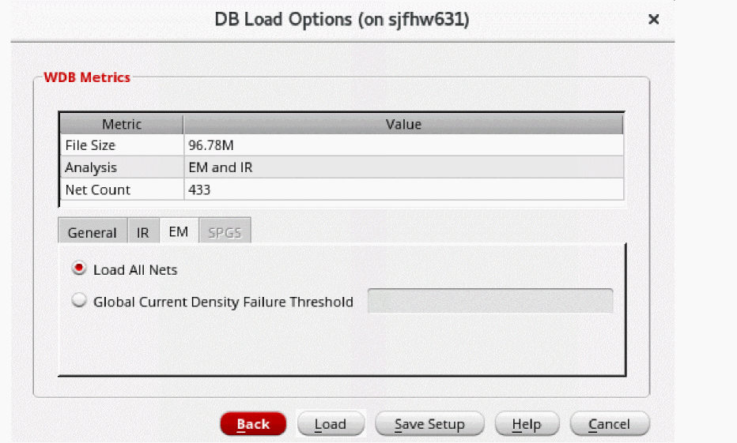
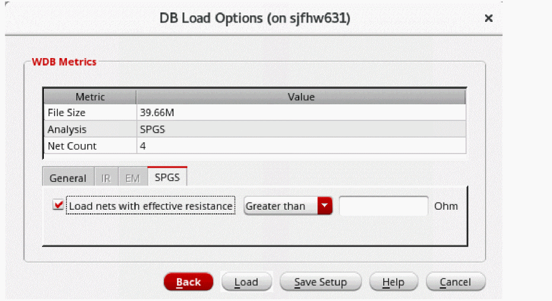

Customizing Data Loading of EM-IR Analysis Results
The Voltus-XFi Results Browser assistant allows you to perform the following to improve efficiency and speed when loading the analysis results:
- enable caching of net data, that is, keep the nets once loaded in memory to speed up subsequent reload in the same session
- select the layers to be loaded
- customize and save the result loading settings for the EM, IR, and SPGS analyses
To customize the loading of results:
-
On the Voltus-XFi Results Browser, click Load EMIR Results (
) to load the results database.
The DB Load Options browse form appears.
 -
Select the .wdb database and click Next.
The DB Load Options form appears.
 - Select the Cache Nets option to keep the loaded nets in memory.
- Select the Load Only Selected Layers option to enable the loading of selected layers for the loaded nets.
- Select the Update Net Summary Metrics option to display metrics only for the selected layers in the Net Summary section of the Voltus-XFi Results Browser assistant.
-
Enable or disable any of the layers individually by selecting the checkboxes next to them in the Load column.
The layers table shows the DFII names if you have set the DFII layer map file using thedfIILayerMapFilevariable. If this variable is not specified, the table shows the DSPF layer names. -
Click the IR tab.
This tab will be enabled only after performing the static/dynamic IR analysis.

- Select the Load only nets failing IR drop option and then enter a value in the IR Fail Threshold field to load nets with IR drop higher than the specified value.
- Specify the threshold value in the IR Fail Threshold field.
-
Click the EM tab.
This tab will be enabled only after performing the static/dynamic EM analysis.
 -
Select the Load All Nets option to display all signal nets. Alternatively, you can specify a threshold value in the Global Current Density Failure Threshold field to only load the nets with a current density value more than the specified threshold value.
-
Click the SPGS tab.
This tab will be enabled only after performing the SPGS analysis.
 - Select the Load nets with effective resistance option to display metrics only for the nets with the resistance value greater than/less than the value entered in the text field.
-
Click Save Setup to save the setting.
The settings will be saved in the .json file format at '.cadence/dfII/tungsten/ResultsLoadSettings.json'. The default file name isResultsLoadSettings.json. This file can be modified by either updating and saving the settings in GUI or manually editing the .json file. You can use theloadResultsSettingsFileenvironment variable to load the saved .json file. - Click Load to load the results according to the saved settings.
Return to top